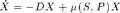
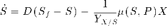
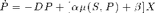
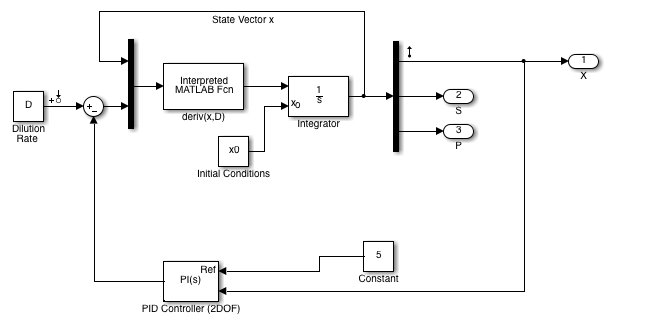
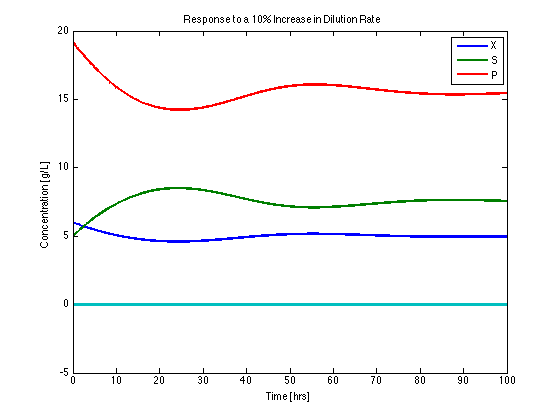

Example 23.01: Simulation of a Continuous Fermentor
This script and associated files demonstrate the development of Simulink model for a continuous fermentor based on Example 23.1 of the SEMD textbook. This script works in conjunction with several associated Simulink models.
Contents
Process Model
Parameters
Yxs = 0.4; % [g/g] alpha = 2.2; % [g/g] beta = 0.2; % [1/hr] mum = 0.48; % [1/hr] Pm = 50; % [g/L] Km = 1.2; % [g/L] Ki = 22; % [g/L] Sf = 20; % [g/L]
Growth Rate Model: Monod growth with substrate and product inihibition
mu = @(S,P) mum*(1-P/Pm)*S/(Km + S + S*S/Ki);
Mass balances are written in terms of biomass concentration (X), substrate concentration (S), and product concentration (P). The resulting differential equations are transcribed from Example 23.1.



These are translated to Matlab expressions that are functions of the states X, S, P and the dilution rate D.
Xdot = @(X,S,P,D) -D*X + mu(S,P)*X; Sdot = @(X,S,P,D) D*(Sf-S) - mu(S,P)*X/Yxs; Pdot = @(X,S,P,D) -D*P + (alpha*mu(S,P) + beta)*X;
Simulink Model
With the model parameters and equations in hand, the next step is to construct a simulink model for the simulation and analysis of the continuous fermentor. Version 1 of the model is shown in the following model.
% Close all open simulink windows bdclose('all'); % Open the model in simulink mdl = 'Ch23_E01_bioreactor_mdl'; eval(mdl);
In the Simulink model the process variables X, S, and P are components of a vector x. Functions and parameters used in other components of the Simulink model are specificed below.
% deriv(x,D) is used in the "Interpreted Matlab fcn" Box to represent the % differential equations. deriv = @(x,D) [ ... Xdot(x(1),x(2),x(3),D); Sdot(x(1),x(2),x(3),D); Pdot(x(1),x(2),x(3),D)]; % tstop specifies the stopping time in the Simulation Configuration menu. tstop = 100; % D specifies the Dilution Rate in a Constant component D0 = 0.202; D = D0; % The following initial conditions correspond to a steady state for the % value of D0 given above. The initial conditions are fed to integrator % component. X0 = 6.0; S0 = 5.0; P0 = 19.14; x0 = [X0;S0;P0];
The model is tested by finding the response to an increase in the dilution rate D. The sim command runs the model from a Matlab script or command line.
D = 1.1*D0; [t,xout] = sim(mdl); plot(t,xout,'Linewidth',2); xlabel('Time [hrs]'); ylabel('Concentration [g/L]'); title('Response to a 10% Increase in Dilution Rate'); legend('X','S','P');
Part (a). Linearization
Linearization is a standard technique for approximating nonlinear processes operating close to a steady state. Simulink provides a number of tools for linearing Simulink models.
Step 1. Linearization points were placed in the Simulink model. An input linearization point was place at the dilution rate, and an output linearization point was placed at the output corresponding to biomass concentration.
io = getlinio(mdl)
2x1 vector of Linearization IOs: -------------------------- 1. Linearization input perturbation located at the following signal: - Block: Ch23_E01_bioreactor_mdl/Dilution Rate - Port: 1 2. Linearization output measurement located at the following signal: - Block: Ch23_E01_bioreactor_mdl/Demux - Port: 1
Step 2. Fix nominal values for inputs and compute the steady state. In Simulink this is referred to as 'trimming' the model.
D = D0; x0 = trim(mdl) D1 = D0; xss_1 = x0;
x0 = 5.000000000000000 7.499999999999189 15.536534391039718 -0.018432584391692
Step 3. Calculate the linearized state-space model and convert to transfer function
Gp = tf(linearize(mdl,io)); set(Gp,'TimeUnit','hours') opts = bodeoptions; opts.MagUnits = 'abs'; opts.MagScale = 'log'; bodeplot(-Gp,opts);
Error using Ch23_E01_bioreactor_PID (line 131)
Error due to multiple causes.
Caused by:
Error using slcontrollib.mdlcfg.ParameterManager/compile (line 211)
Error in port widths or dimensions. Output port 1 of 'Ch23_E01_bioreactor_mdl/deriv(x,D)' is a one dimensional vector with 3 elements.
Error using slcontrollib.mdlcfg.ParameterManager/compile (line 211)
Error in port widths or dimensions. Input port 1 of 'Ch23_E01_bioreactor_mdl/Integrator' is a one dimensional vector with 1 elements.Part (b). Simulation
Simulate the response of +/- 10% change in dilution rates. We'll do both simulations and compare to the linearized response.
D = 1.1*D0; [tA,xoutA] = sim(mdl); D = 0.9*D0; [tB,xoutB] = sim(mdl); plot(tA,xoutA(:,1),tB,xoutB(:,1),'LineWidth',2); [y,t] = step(Gp,tstop); y = 0.1*D0*y; hold on; plot(t,y+x0(1),'--',t,-y+x0(1),'--','Linewidth',2); hold off xlabel('Time [hr]'); ylabel('Biomass ['); title('Biomass Response to a Step Change'); grid; legend('D_0 + 10%','D_0 - 10%','D_0 + 10% (linear)','D_0 - 10% (linear)');
PID Control at Steady State 1.
x0 = xss_1; D = D1; Gp = tf(linearize(mdl,io)); set(Gp,'TimeUnit','hours') D = 1.1*D1;
[t,xout] = sim(mdl); plot(t,xout(:,1),'LineWidth',2); [y,t] = step(Gp,tstop); y = 0.1*D1*y; hold on; plot(t,y+x0(1),'--','Linewidth',2); hold off xlabel('Time [hr]'); ylabel('Biomass ['); title('Biomass Response to a Step Change'); grid; legend('D_0 + 10%','D_0 + 10% (linear)');
mdl = 'Ch23_E01_bioreactor_mpc_mdl'; D = D1; [t,xout,yout] = sim(mdl); subplot(2,1,1); plot(t,yout(:,1),'LineWidth',2); subplot(2,1,2); plot(t,yout(:,4),'LineWidth',2); xlabel('Time [hr]'); ylabel('Biomass ['); title('Biomass Response to a Step Change'); grid;